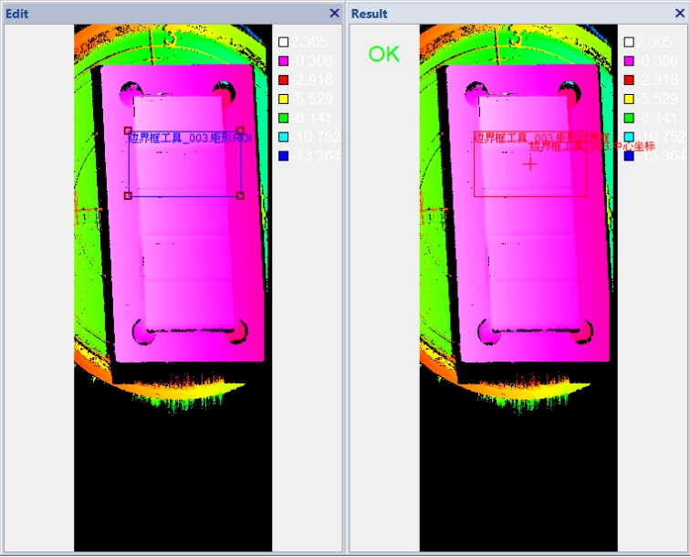
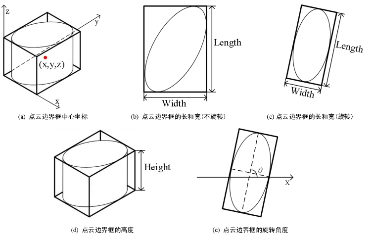

获取深度图像边界框信息，图1所示为点云边界框工具的效果图。

| 分类 | 参数名称 | 参数描述 |
|---|---|---|
| 属性窗口 | ROI生成方式 | 包括：定位、固定ROI、参考点三种模式，参考点模式会根据数据链接中的参考点和参考直线建立产品坐标系。 |
| X固定偏移量 | 在参考点模式下，在建立的产品坐标系中ROI参考位置坐标X，单位：mm。 | |
| Y固定偏移量 | 在参考点模式下，在建立的产品坐标系中ROI参考位置坐标Y，单位：mm。 | |
| ROI类型 | 分为3种，整幅图像、矩形ROI和仿射矩形ROI。 | |
| 是否旋转 | 分为2种，旋转和不旋转。旋转检测的是主轴最小外接矩形，不旋转检测的是坐标最小外接矩形。 | |
| 启用Z向过滤器 | 选择“是”，则开启Z向过滤功能，可以设置阈值范围、阈值下限、阈值上限。 | |
| 阈值范围 | 选择“阈值范围内”，则选择阈值范围内的点；选择“阈值范围外”，则排除阈值范围内的点，选取范围外的点；选择“全部”，则忽略阈值范围，选取全部点。 | |
| 阈值下限 | 阈值范围的下限，取值范围为[-100, 100]，且小于等于硬阈值2，单位mm。 | |
| 阈值上限 | 阈值范围的上限，取值范围为[-100, 100]，且大于等于硬阈值1，单位mm。 | |
| 宽度上限 | 取值范围为[0, 100000]，且下限应小于等于上限。 | |
| 宽度下限 | 取值范围为[0, 100000]，且下限应小于等于上限。 | |
| 长度上限 | 取值范围为[0, 100000]，且下限应小于等于上限。 | |
| 长度下限 | 取值范围为[0, 100000]，且下限应小于等于上限。 | |
| 高度上限 | 取值范围为[0, 100000]，且下限应小于等于上限。 | |
| 高度下限 | 取值范围为[0, 100000]，且下限应小于等于上限。 | |
| 旋转角度上限 | 取值范围为[-90, 90]，且下限应小于等于上限。 | |
| 旋转角度下限 | 取值范围为[-90, 90]，且下限应小于等于上限。 | |
| 图像窗口 | 深度图像 | 显示待检测的深度图像，显示为伪彩色图像。 |
| 检测区域 | 在图像上显示待检测区域。 | |
| 数据链 | 输入深度图像 | 输入待检测的深度图像。 |
| 二维线性变换 | 目标相对于模板的平移、旋转、缩放变换。 | |
| 参考点 | 以此点建立产品坐标系的原点。 | |
| 参考直线 | 当直线角度趋向于水平时，则该直线作为X轴，否则为Y轴。 | |
| 像素当量 | 建立产品坐标系时，即属性中的X固定偏移、Y中的固定偏移以此反推出图像距离，单位：mm/pixel。 | |
| 高级界面 | 无 | 无 |
| 分类 | 参数名称 | 参数描述 |
|---|---|---|
| 监视窗口 | 输出深度图像 | 输入图像的长宽和像素大小，以及深度数据参数。 |
| 中心X坐标 | 检测结果边界框中心的X坐标。 | |
| 中心Y坐标 | 检测结果边界框中心的Y坐标。 | |
| 中心Z坐标 | 检测结果边界框中心的Z坐标。 | |
| 宽度 | 检测结果边界框的宽度。 | |
| 长度 | 检测结果边界框的长度。 | |
| 高度 | 检测结果边界框的高度。 | |
| 旋转角度 | 检测结果边界框的旋转角度。 | |
| 执行结果 | 工具执行结果。 | |
| 执行时间 | 工具执行时间。 | |
| 图像窗口 | 输入深度图像 | 显示检测的深度图像，显示为伪彩色图像。 |
| 边界框 | 显示检测结果边界框，包括边界框及其中心。 | |
| 数据链 | 同监视窗口参数，供后续工具使用。 |
Step 1 设置检测区域和旋转类型
为了获取深度数据的边界框信息，需要设置检测区域和边界框旋转类型。其中，检测区域有3种：整幅图像、矩形、仿射矩形，而旋转类型有2种：旋转和不旋转。
Step 2 执行测量和输出结果
在完成检测区域，边界框的旋转类型的设置后，就可以执行测量了。输出的结果包括：边界框的中心坐标，边界框的边长信息以及边界框的旋转角度。边界框的相关信息如图2所示。

其中，
中心坐标：检测区域内深度数据边界框的中心点坐标 (x, y, z)，如图2(a)所示。
宽度：检测区域内深度数据边界框的宽度。如图2(b)所示，当不启用旋转功能时，边界框为侧边平行于X轴和Y轴的最小矩形，宽度为X轴方向上的尺寸。如图2©所示，当启用旋转功能时，宽度为旋转后边界框的较小侧边尺寸。
长度：检测区域内深度数据边界框的长度。如图2(b)所示，当不启用旋转功能时，边界框为侧边平行于X轴和Y轴的最小矩形，长度为Y轴方向上的尺寸。如图2©所示，当启用旋转功能时，长度为旋转后边界框的较大侧边尺寸。
高度：检测区域内深度数据边界框的高度，如图2(d)所示。。
旋转角度：当不启用旋转功能，旋转角度始终为90°；当启用旋转功能时，如图2(e)所示，旋转角度为边界框长边与X轴的夹角θ。
当“启用启用Z向过滤器”为“是”时，输出图像为Z向分割后的图像，否则为输入图像。
参见“\Samples\3D\深度图\3D测量工具.gvp”。